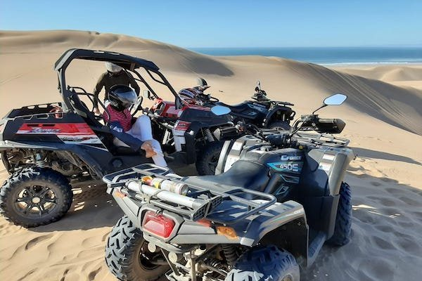
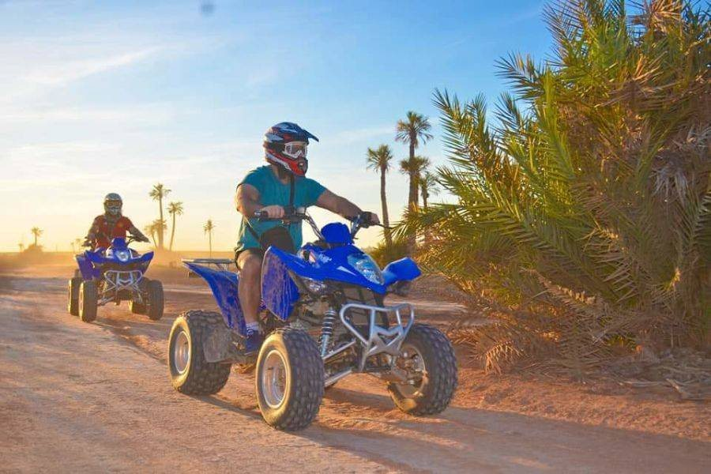
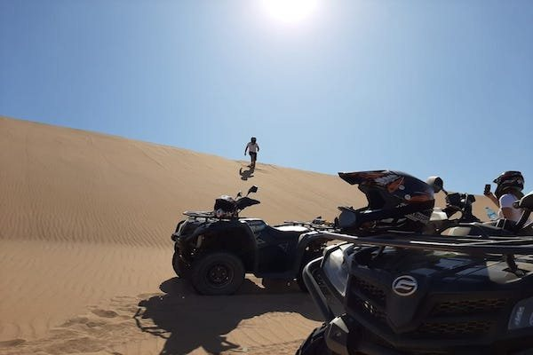
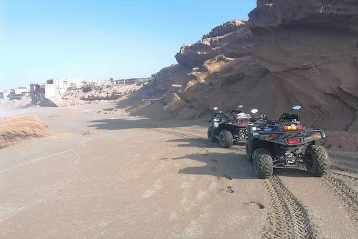

Buggy Tour
Share the thrill: two hours by buggy over the Tifnit dunes and along the Atlantic, from the same base as the quads — two seats, driver plus passenger.
Home / Excursions / Quad Bike
Berber villages to the Tifnit dunesTwo hours of pre-Saharan terrain south of Agadir: Berber village tracks, open scrubland and the sand dunes of Tifnit beach. Helmet and goggles provided.

South of Agadir the tourist strip ends fast. This tour drives you out to a base near a Berber village, hands you a quad after a ten-minute orientation, and takes you through rural tracks and pre-Saharan scrub down to the sand dunes of Tifnit beach.
It's a guided group ride, not a rental — the route is led, and helmet and goggles are included. Quads and buggies run from the same base, so mixed groups are no problem if half your party would rather share a buggy.
Pickup from Agadir hotels, Taghazout or the Cruise Port, then the drive south toward Tifnit.
About 10 minutes on the controls and the rules of the track, with helmet and goggles fitted.
Guided ride through Berber village country and pre-Saharan terrain, ending on the Tifnit beach dunes.
Back to the base, then the drive back to your hotel.
Adventure-minded travellers and groups. No experience needed thanks to the orientation, but tell us on WhatsApp who's in your group — minimum ages and driving requirements are confirmed by the operator when you book.




Licence and age requirements depend on your group — ask on WhatsApp with your group's details and we'll confirm what applies before you book.
No — every tour starts with a 10-minute orientation, and the ride is guided at group pace.
Yes. Quads and buggies run from the same base south of Agadir, so mixed groups ride the same route.
More answers on the FAQ page, or just ask on WhatsApp.